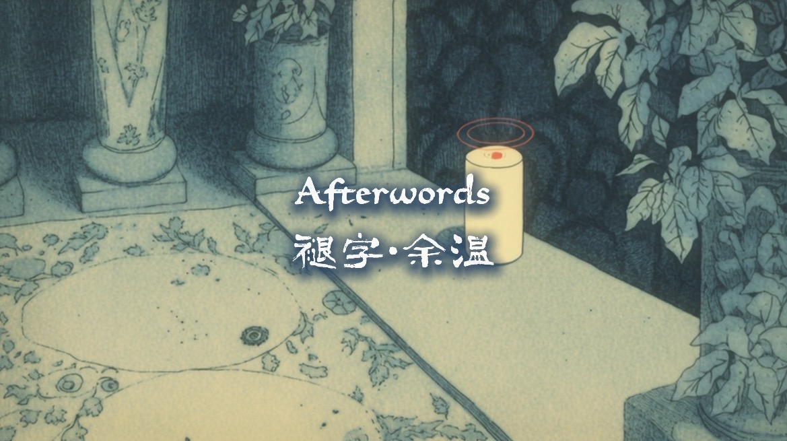
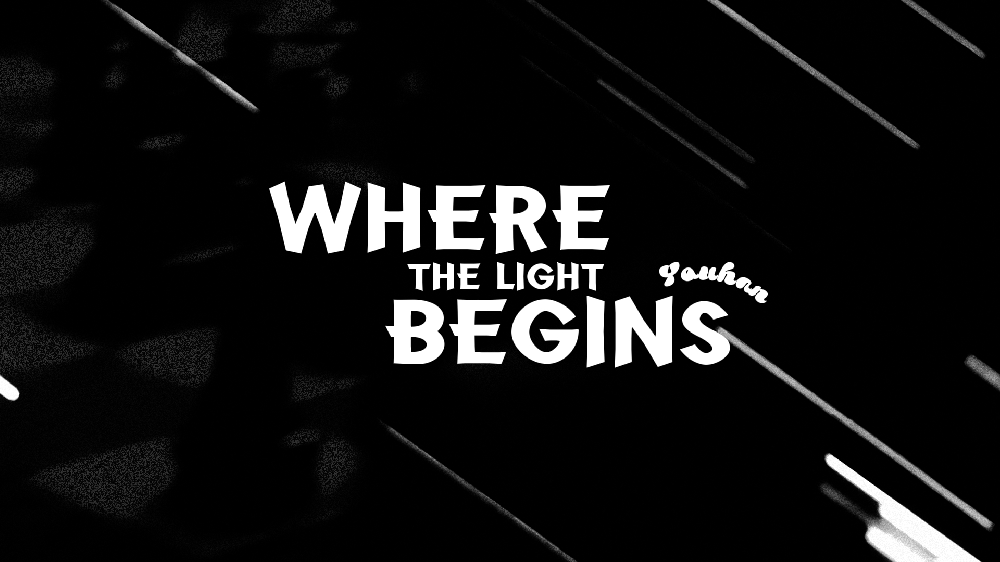
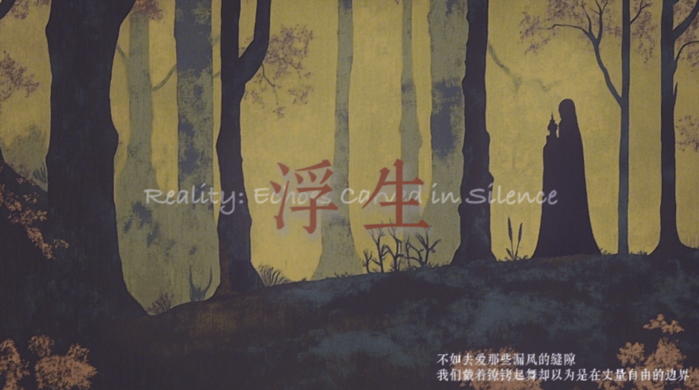
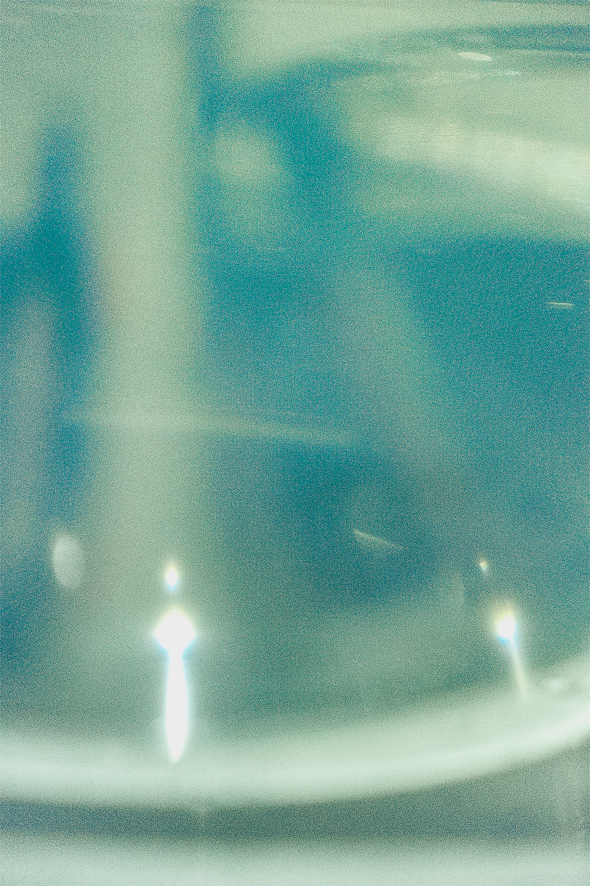
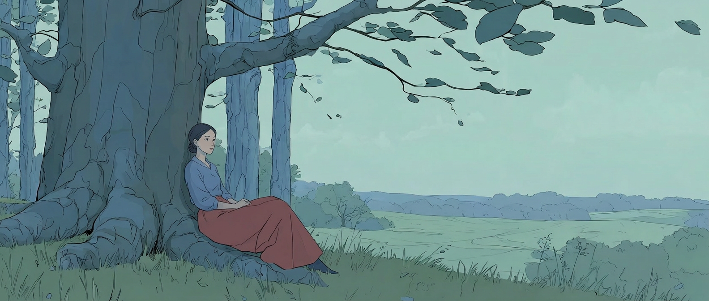
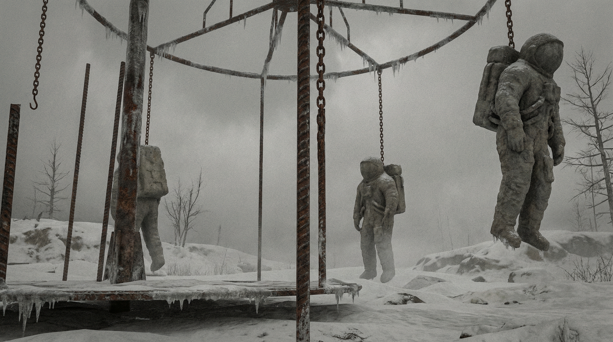
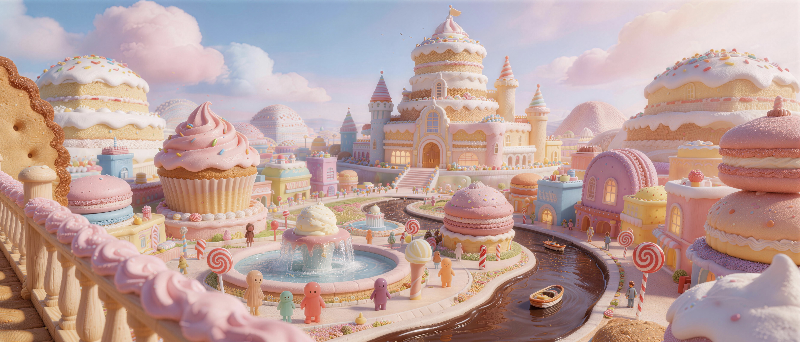
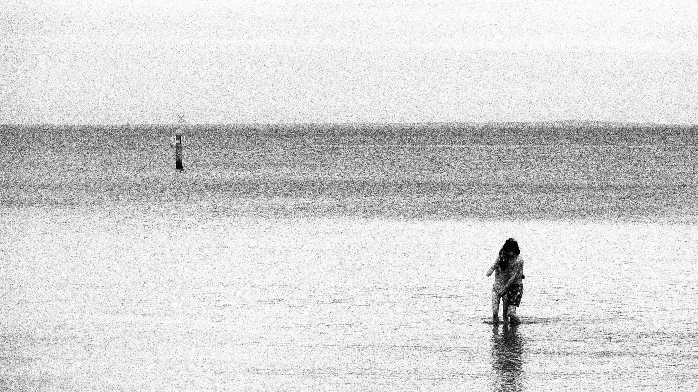

Afterwards
AIGC / Video

In Plain Sight
AIGC / Video

Where the light begins
Experimental short film / Video

Reality: Echoes carved in silence
AIGC / Video

Light
Photography / Image
Forward
Photography / Image

Forget / Remember
AIGC / Video

The ELM
AI / Image

Stone
AI / Image

Scene
AI / Image

Ocean
AI / Image